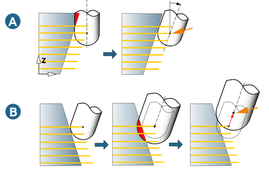
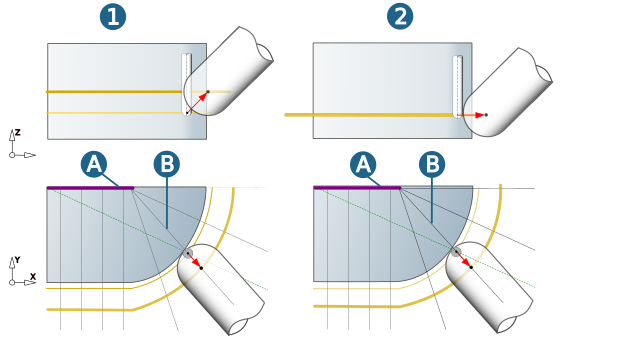
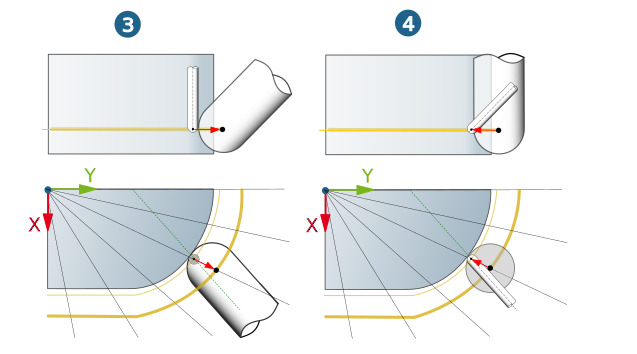
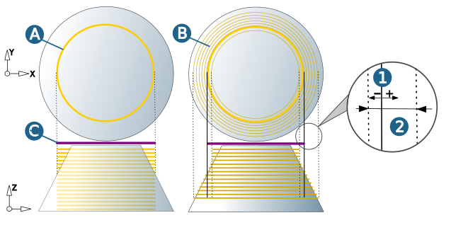
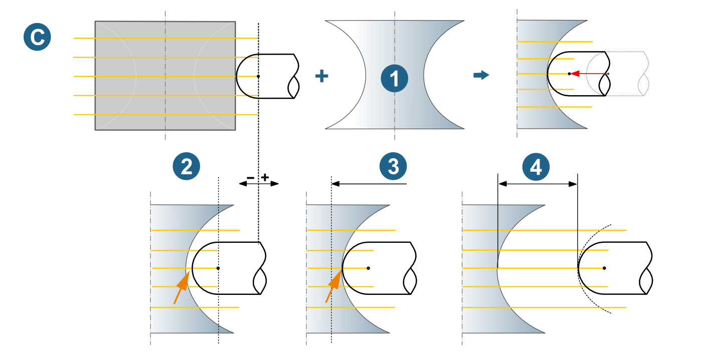

Strategy
Rework area
Toolpath: Milling takes place along the toolpaths already machined in the reference job.
Collision path: Milling takes place along the paths that were calculated in the reference job could but not be machined due to collisions.
Rework mode
Keep position (A): Select to mill with the same tool as in the reference job. The position of the tool reference point (center) does not change.
Modify position (B): Select to mill with a different tool from the one in the reference job. The position of the tool reference point varies depending on the tool geometry.
|  |
Tip check tolerance: Permissible violation of the model geometry. Standard = machining tolerance * 0.5.
Modify strategy
Axial retract (1): The tool is retracted axially.
Side retract / inclination (2): The tool (depending on the inclination) is retracted laterally.
A) Manual curve to specify the tilt, B) XY-component of the tilt vector
|  |
Radial retract / inside (3): The tool is retracted radially from the inside-out, starting from the Z-axis of the machining frame.
Radial retract / outside (4): The tool is retracted radially from the outside-in, in the direction of the Z-axis of the machining frame.
|  |
The area to be machined can be controlled via the offset (1) and the max. retract distance (2). A) Reference machining (3D Free Path Milling), B) Rework (strategy: radial retract / outside), C) Contour used (3D Free Path Milling).
|  |
Use the Fixed direction option to specify the direction of movement. Control the length of movement using the Offset (1), and specify the direction for calculation of the toolpaths using the B angle and C angle parameters. (2) 5X SWARF Cutting 1 Curve. (3) 5X Rework Machining.
Graphical feedback (blue arrows) indicates the direction of the Offset (A) and B angle (B).
 |
Note
The strategy is not based on frames (like the Radial retract option) and is independent of tool vectors. It is particularly powerful when using barrel tools.
Retract surfaces (C)
Milling is performed with the same tool as in the reference job. However, in order to optimize the tool orientation, retract surfaces are used (1).
Likewise, the tool is axially withdrawn in a collision. The retract movement is controlled through the offset (+/-) (2). If the offset value is greater than the distance between the tool reference point of the reference machining and the retract face, the machining takes place on the retract face (3).
You can also define an allowance to be kept (4).
|  |